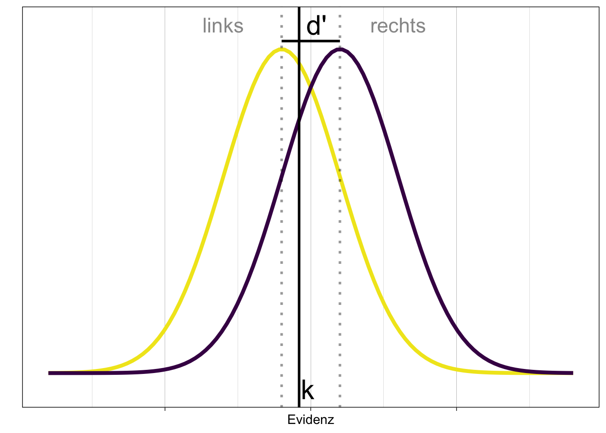

![]()
── Attaching core tidyverse packages ──────────────────────── tidyverse 2.0.0 ──
✔ dplyr 1.1.2 ✔ readr 2.1.4
✔ forcats 1.0.0 ✔ stringr 1.5.0
✔ ggplot2 3.4.2 ✔ tibble 3.2.1
✔ lubridate 1.9.2 ✔ tidyr 1.3.0
✔ purrr 1.0.1
── Conflicts ────────────────────────────────────────── tidyverse_conflicts() ──
✖ dplyr::filter() masks stats::filter()
✖ dplyr::lag() masks stats::lag()
ℹ Use the conflicted package (<http://conflicted.r-lib.org/>) to force all conflicts to become errorsSDT anwenden
Bias im RDK Experiment untersuchen.
Lernziele
In der heutigen Sitzung lernen wir:
- SDT auf einen Datensatz mit mehreren Bedingungen anwenden.
- Sensitivität \(d'\) und Bias \(c\) grafisch darstellen und zwischen ‘within’-Bedingungen vergleichen.
Wichtig
Daten importieren
Wir importieren die Daten aus dem RDK Experiment.
df <- read_csv("data/rdkdata_clean.csv")Rows: 7163 Columns: 11
── Column specification ────────────────────────────────────────────────────────
Delimiter: ","
chr (4): condition, cue, direction, choice
dbl (7): id, trial_all, block, trial_inblock, response, rt, correct
ℹ Use `spec()` to retrieve the full column specification for this data.
ℹ Specify the column types or set `show_col_types = FALSE` to quiet this message.Zur Sicherheit schauen wir uns die ersten 10 Zeilen an.
df# A tibble: 7,163 × 11
id trial_all block trial_inblock condition cue direction choice response
<dbl> <dbl> <dbl> <dbl> <chr> <chr> <chr> <chr> <dbl>
1 511 0 0 0 neutral none right right 1
2 511 1 0 1 neutral none left left 0
3 511 2 0 2 invalid right left left 0
4 511 3 0 3 invalid left right right 1
5 511 4 0 4 valid right right right 1
6 511 5 0 5 valid right right left 0
7 511 6 0 6 valid right right left 0
8 511 7 0 7 valid right right right 1
9 511 8 0 8 neutral none left left 0
10 511 9 0 9 neutral none left right 1
# ℹ 7,153 more rows
# ℹ 2 more variables: rt <dbl>, correct <dbl>Daten vorbereiten
Die Variablen id, condition, cue, direction, choice sind kategorisch. Wir konvertieren sie zu Faktoren.
Signal Detection Theory Kennzahlen berechnen
Die Vpn sollten die Richtung des RDKs angeben; diese war entweder ‘right’ oder ‘left’ und ist in der Variablen choice gespeichert. Wir können die Antworten der Vpn mit der tatsächlichen Richtung des RDKs vergleichen, um zu bestimmen, ob die Vpn richtig oder falsch geantwortet haben. Wir können die Antworten der Vpn und die Richtung des RDKs in vier Kategorien einteilen: Hit, Miss, False Alarm, und Correct Rejection.
Wir definieren nun korrekte rechts-Antworten als Hit, falsche rechts-Antworten als Miss, korrekte links-Antworten als Correct Rejection, und falsche links-Antworten als False Alarm.
Nun zählen wir die Anzahl Hit, Miss, FA, und CR für jede Vp und Bedingung. Wir können dies mit count() machen.
df_cue# A tibble: 525 × 4
# Groups: id, cue [135]
id cue type n
<fct> <fct> <chr> <int>
1 184 none CR 31
2 184 none FA 9
3 184 none Hit 19
4 184 none Miss 21
5 184 right CR 5
6 184 right FA 3
7 184 right Hit 15
8 184 right Miss 17
9 184 left CR 19
10 184 left FA 13
# ℹ 515 more rowsAnschliessend können wir die Daten mit pivot_wider() in ein wide Format umwandeln, so dass jede Kennzahl eine eigene Spalte erhält.
df_cue <- df_cue |>
pivot_wider(names_from = type, values_from = n) df_cue# A tibble: 135 × 6
# Groups: id, cue [135]
id cue CR FA Hit Miss
<fct> <fct> <int> <int> <int> <int>
1 184 none 31 9 19 21
2 184 right 5 3 15 17
3 184 left 19 13 3 5
4 185 none 19 21 20 20
5 185 right 5 3 21 11
6 185 left 15 17 3 5
7 238 none 28 12 12 28
8 238 right 3 5 15 17
9 238 left 26 6 NA 8
10 239 none 34 6 23 17
# ℹ 125 more rowsEs gibt noch NA Werte - deis bedeutet, dass die Vp keine Antworten des entsprechenden Typs gegeben hat. Diese NAs müssen wir durch 0 ersetzen, damit wir die Kennzahlen berechnen können.
df_cue# A tibble: 135 × 6
# Groups: id, cue [135]
id cue CR FA Hit Miss
<fct> <fct> <dbl> <dbl> <dbl> <dbl>
1 184 none 31 9 19 21
2 184 right 5 3 15 17
3 184 left 19 13 3 5
4 185 none 19 21 20 20
5 185 right 5 3 21 11
6 185 left 15 17 3 5
7 238 none 28 12 12 28
8 238 right 3 5 15 17
9 238 left 26 6 0 8
10 239 none 34 6 23 17
# ℹ 125 more rowsNun berechnen wir die relativen Häufigkeiten, mit denen Hit und FA auftreten.
Tip
Die Hit Rate ist die Anzahl Hits geteilt durch die Anzahl Hits und Misses (wie oft hat die Versuchsperson korrekterweise ‘rechts’ gesagt, wenn der Stimulus tatsächlich ‘rechts’ war?) Die False Alarm Rate ist die Anzahl FAs geteilt durch die Anzahl FAs und CRs (wie oft hat die Versuchsperson fälschlicherweise ‘rechts’ gesagt, wenn der Stimulus tatsächlich ‘links’ war?).
df_cue <- df_cue |>
mutate(hit_rate = Hit/(Hit + Miss),
fa_rate = FA/(FA + CR))df_cue# A tibble: 135 × 8
# Groups: id, cue [135]
id cue CR FA Hit Miss hit_rate fa_rate
<fct> <fct> <dbl> <dbl> <dbl> <dbl> <dbl> <dbl>
1 184 none 31 9 19 21 0.475 0.225
2 184 right 5 3 15 17 0.469 0.375
3 184 left 19 13 3 5 0.375 0.406
4 185 none 19 21 20 20 0.5 0.525
5 185 right 5 3 21 11 0.656 0.375
6 185 left 15 17 3 5 0.375 0.531
7 238 none 28 12 12 28 0.3 0.3
8 238 right 3 5 15 17 0.469 0.625
9 238 left 26 6 0 8 0 0.188
10 239 none 34 6 23 17 0.575 0.15
# ℹ 125 more rowsNun gibts es noch eine kleines Problem: Falls es irgendwo eine hit_rate oder eine fa_rate von 0 oder 1 gibt, können wir nicht weiterrechnen. Relative Häufigkeiten sind Schätzungen von Wahrscheinlichkeiten und müssen daher zwischen 0 oder 1 liegen. Wir können dieses Problem lösen, indem wir die hit_rate und fa_rate um einen kleinen Wert erhöhen oder verringern, falls sie 0 oder 1 sind.
df_cue# A tibble: 135 × 8
# Groups: id, cue [135]
id cue CR FA Hit Miss hit_rate fa_rate
<fct> <fct> <dbl> <dbl> <dbl> <dbl> <dbl> <dbl>
1 184 none 31 9 19 21 0.475 0.225
2 184 right 5 3 15 17 0.469 0.375
3 184 left 19 13 3 5 0.375 0.406
4 185 none 19 21 20 20 0.5 0.525
5 185 right 5 3 21 11 0.656 0.375
6 185 left 15 17 3 5 0.375 0.531
7 238 none 28 12 12 28 0.3 0.3
8 238 right 3 5 15 17 0.469 0.625
9 238 left 26 6 0 8 0.001 0.188
10 239 none 34 6 23 17 0.575 0.15
# ℹ 125 more rowsDamit wir nun \(d'\) und \(c\) berechnen können, müssen die hit_rate und fa_rate in \(z\)-Werte umgewandelt werden.
Mit den z-transformierten Werten können wir nun \(d'\) und \(c\) berechnen.
\[ c = -\frac{1}{2} \left[\phi^{-1}(p_{H}) + \phi^{-1}(p_{FA})\right] = -\frac{1}{2} \left[zH + zFA\right] \] \[ d' = k - \phi^{-1}(1-p_{H}) = \phi^{-1}(p_{H}) - \phi^{-1}(p_{FA}) = zH - zFA \]
Grafische Darstellung von Bias und Sensitivität
Um einen Überblick zu gewinnen, stellen wir \(c\) und \(d'\) grafisch dar. Wir erarten hier, dass die Sensitivität unverändert bleibt, da wir diese nicht manipuliert haben. Der Bias sollte sich jedoch zwischen den Bedingungen unterscheiden. In der neutralen Bedingung, d.h. wenn kein Hinweisreiz gegeben wurde, sollte der Bias bei 0 liegen. Falls der Hinweisreiz die Vp dazu bringt, eher ‘rechts’ zu antworten, sollte der Bias negativ sein. Falls der Hinweisreiz die Vp dazu bringt, eher ‘links’ zu antworten, sollte der Bias positiv sein.
In folgendem Veranschaulichung liegt das Kriterium \(k\) links der Mitte zwischen beiden Verteilungen. Folglich wird \(c = k - d' <0\). Ein negativer Bias führt dazu, dass die Person eher eine ‘rechts’-Antwort gibt.

Tatsächlich scheint es eine Tendenz zu geben, dass der ‘rechts’ Hinweis zu einem negativen Bias führt, während der ‘links’ Hinweis zu einem positiven Bias führt - die Variabilität zwischen den Versuchspersonen ist jedoch gross, und es scheint einige Personen zu geben, welche genau das Gegenteil zeigen. Es scheint jedoch auch einige Personen zu geben, welche systematisch falsch geantwortet haben (negative Sensitivität).
df_cue |>
ggplot(aes(x = c, y = dprime)) +
geom_hline(yintercept = 0, color = "blue", linetype = 2) +
geom_vline(xintercept = 0, color = "blue", linetype = 2) +
geom_jitter(size = 1) +
facet_wrap(~ cue) +
labs(x = "c", y = "d'") +
ggtitle("Bias vs. sensitivity") +
theme_linedraw()
Mittelwerte und Standardfehler
Nun wollen wir, wie im Kapitel zum Thema ‘aggregierte Statistiken’, die Bedingungen bezüglich der Sensitivität und des Bias vergleichen. Wir müssen berücksichtigen, dass jede Person in 3 Bedingungen getestet wurde - die Art des Hinweisreizes ist also ein within-Faktor.
Wir wählen zuerst die relevanten Variablen aus.
sdt_final <- df_cue |>
select(id, cue, dprime, k, c)Nun berechnen wir die Mittelwerte und die within-person-Standardfehler der Mittelwerte für den Bias und die Sensitivität.
cs <- sdt_final |>
select(id, cue, c) |>
Rmisc::summarySEwithin(measurevar = "c",
withinvars = "cue",
idvar = "id",
na.rm = FALSE,
conf.interval = 0.95)dprimes <- sdt_final |>
select(id, cue, dprime) |>
Rmisc::summarySEwithin(measurevar = "dprime",
withinvars = "cue",
idvar = "id",
na.rm = FALSE,
conf.interval = 0.95)Plots
Als Beispiel nehmen wir hier den Bias. Wir stellen die Mittelwerte als Linienplot dar, und zusätzlich als Punkte mit Fehlerbalken. Die Punkte sind die Mittelwerte, die Fehlerbalken die Standardfehler der Mittelwerte.
cs |>
ggplot(aes(x = cue, y = c, group = 1)) +
geom_hline(yintercept = 0,
linetype = "dashed",
color = "grey60") +
geom_line() +
geom_errorbar(width = 0.1, aes(ymin = c - ci,
ymax = c + ci)) +
geom_point(shape = 21, size = 3, fill = "white") +
ggtitle("c (bias)")Zusatzlich können wir die Datenpunkte plotten; diese sind jedoch im Dataframe sdt_final gespeichert, und nicht im Dataframe cs. Daher benutzen wir das Argument data = sdt_final in geom_jitter.
cs |>
ggplot(aes(x = cue, y = c, group = 1)) +
geom_hline(yintercept = 0,
linetype = "dashed",
color = "grey60") +
geom_jitter(aes(cue, c), alpha = 0.3, data = sdt_final, width = 0.05) +
geom_line() +
geom_errorbar(width = 0.1, aes(ymin = c - ci,
ymax = c + ci)) +
geom_point(shape = 21, size = 3, fill = "white") +
ggtitle("c (bias)")Mit dem patchwork Package können wir die beiden Plots kombinieren.
library(patchwork)
p_dprime <- dprimes |>
ggplot(aes(x = cue, y = dprime, group = 1)) +
geom_jitter(aes(cue, dprime), alpha = 0.1, data = sdt_final, width = 0.05) +
geom_line() +
geom_errorbar(width = 0.1, aes(ymin = dprime - ci,
ymax = dprime + ci)) +
geom_point(shape = 21, size = 3, fill = "white") +
ggtitle("Sensitivity")
p_bias <- cs |>
ggplot(aes(x = cue, y = c, group = 1)) +
geom_jitter(aes(cue, c), alpha = 0.1, data = sdt_final, width = 0.05) +
geom_hline(yintercept = 0,
linetype = "dashed",
color = "grey60") +
geom_line() +
geom_errorbar(width = 0.1, aes(ymin = c - ci,
ymax = c + ci)) +
geom_point(shape = 21, size = 3, fill = "white") +
ggtitle("Bias")
p_dprime / p_biasFalls Ihnen diese Darstellung nicht gefällt, können Sie die Grafiken mit + auch nebeneinander anordnen.
Tip
Mit / werden die Grafiken untereinander angeordnet, mit + nebeneinander.
p_dprime + p_biasZusammenfassung
Die Bedingungen unterscheiden sich bezüglich der Sensitivität kaum. Bezüglich des Bias sehen wir das erwartete Muster; in der neutralen Bedingung ist der Bias über die Personen aggregiert nahe bei 0, in der ‘rechts’-Bedingung negativ und in der ‘links’-Bedingung positiv. Ob dies einer statistischen Untersuchung standhält könnten z.B. wir mit einer ‘repeated-measures’ ANOVA untersuchen.
Reuse
Citation
BibTeX citation:
@online{ellis2022,
author = {Ellis, Andrew},
title = {SDT Anwenden},
date = {2022-05-01},
url = {https://kogpsy.github.io/neuroscicomplabFS23//pages/chapters/signal-detection-2.html},
langid = {en}
}
For attribution, please cite this work as:
Ellis, Andrew. 2022. “SDT Anwenden.†May 1, 2022. https://kogpsy.github.io/neuroscicomplabFS23//pages/chapters/signal-detection-2.html.